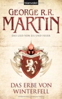
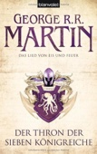

| # |
Autor |
Serie |
Titel |
Format |
Seiten |
Erscheinungsdatum |
Verlag |
Genre |
| 109 |
Thomas Mann |
|
Tristan |
Taschenbuch |
|
Dez. 1986 |
Reclam, Ditzingen |
Romane & Erzählungen |

Tristan Thomas Mann
ISBN: 9783150064313
ListPrice: EUR 2,20
Maße: 0.28 x 5.87 x 3.78 in
Wertung: 4.0 (5 Stimmen)
Hinzugefügt am: 03.12.2008
Zusammenfassung: der künstler, der sich nach dem leben sehnt und es dennoch nicht erreichen kann, das leben, das den künstler abweist und über ihn und seine schwäche lacht - wunderbar hat thomas mann seinen lebenslangen konflikt hier wieder einmal auf die spitze getrieben und umgesetzt. so schaut der leser dieses mal aus der sicht des kranken, lebensunfähigen dilletantischen künstlers tristan auf leben und welt und insbesondere auf die leiden, die ein ewig von beidem ausgeschlossener erdulden muss.
wortgewaltige umsetzung eines großen, immer und gerade heute aktuellen stoffes, derer es mehr geben sollte und leider fast keine mehr gibt. fazit: lesen!
Themen
Modern fiction, Belletristik, Erzählungen, Romane, TB/Belletristik/Hauptwerk vor 1945, Deutsche Belletristik, Roman, Erzählung
|
| 110 |
George R.R. Martin |
Das Lied von Eis und Feuer |
1 - Die Herren von Winterfell |
Taschenbuch |
576 |
Dez. 2010 |
Blanvalet Taschenbuch Verlag |
Fantasy |
1 - Die Herren von Winterfell George R.R. Martin
ISBN: 9783442267743
ListPrice: EUR 15,00
Maße: 2.13 x 8.43 x 5.35 in
Serie: Das Lied von Eis und Feuer
Hinzugefügt am: 15.12.2011
Zusammenfassung: In Band 1 seiner ersten Fantasy-Saga "Das Lied von Eis und Feuer 1. Die Herren von Winterfell" erzählt Martin in einer bunten Mischung aus Intrigen, geballter Handlung, romantischen Liebesgeschichten und geheimnisvollen Abenteuern das Leben der Herren von Winterfell. Die Existenz dieses Adelsgeschlechts ist von der durch die klimatischen Veränderungen hervorgerufenen Ausweitung der Jahreszeiten auf bis zu mehrere Jahrzehnte bedroht und hat durch seine menschlichen Perversionen nahezu jeglichen Zauber verloren.
Besondere Raffinesse beweist Martin in diesem ersten Band durch eine ausgefeilte Erzähltechnik, eine großartige Handlung und eine gelungenen Integration seiner politischen Sichtweisen in den Handlungsstrang der Geschichte. Die vielen Charaktere und Perspektivenwechsel mögen auf den Leser zwar etwas abschreckend wirken, doch läßt sich dies in einem mehrbändigen Werk dieser Art wohl nur schwer vermeiden. Aus diesem Grund sollte dieses Werk wohl auch lieber von Anfang an gelesen werden. Sofern sich von diesem Anfang jedoch Rückschlüsse auf den Rest der Geschichte ziehen lassen, lohnt sich aufgrund seines hohen literarischen Wertes, seines Einfallsreichtums, seiner emotionalen Wirkung auf den Leser und der superben Schaffung neuer Welten auch die Gesamtlektüre dieses Werkes.
Themen
|
| 111 |
George R.R. Martin |
Das Lied von Eis und Feuer |
2 - Das Erbe von Winterfell |
Taschenbuch |
544 |
März 2011 |
Blanvalet Taschenbuch Verlag |
Fantasy |
2 - Das Erbe von Winterfell George R.R. Martin

ISBN: 9783442267811
ListPrice: EUR 15,00
Maße: 1.97 x 8.43 x 5.35 in
Serie: Das Lied von Eis und Feuer
Hinzugefügt am: 30.12.2011
Zusammenfassung: Erscheinungsjahr: 2010
Übersetzung: Ingwersen, Jörn
Gewicht: 700 gr / Abmessungen: 215 mm x 135 mm
Von Martin, George R. R. / Übersetzt v. Ingwersen, Jörn / Erarb. v. Zühlke, Sigrun; Gießl, Thomas
Die größte Fantasy-Saga unserer Zeit in vollständig überarbeiteter Neuausgabe!
Eddard Stark, der Lord von Winterfell, ist dem Ruf seines Königs und alten Freundes Robert Baratheon gefolgt und hat seine kalte Heimat im hohen Norden verlassen, um als Hand als Roberts Berater und Stellvertreter zu dienen. Eddard ist ein geradliniger, tapferer und aufrechter Mann, der sich jeder Gefahr mit dem Schwert entgegenstellen würde doch die Ränke der Mächtigen bei Hof sind nichts, was man mit einem Schwert bekämpfen kann. Auch dann nicht, wenn man die Hand des Königs ist ...
Themen
|
| 112 |
George R.R. Martin |
Das Lied von Eis und Feuer |
3 - Der Thron der Sieben Königreiche |
Taschenbuch |
576 |
Juni 2011 |
Blanvalet Taschenbuch Verlag |
Fantasy |
3 - Der Thron der Sieben Königreiche George R.R. Martin

ISBN: 9783442268221
ListPrice: EUR 15,00
Maße: 2.05 x 8.43 x 5.35 in
Serie: Das Lied von Eis und Feuer
Hinzugefügt am: 30.12.2011
Zusammenfassung: Achtung! Seien Sie gewarnt! Lesen Sie diese Rezension nur, wenn Sie die beiden ersten Bände der Serie ("Die Herren von Winterfell", "Das Erbe von Winterfell") bereits kennen. Wir übernehmen keinerlei Verantwortung! Der Rechtsweg ist ausgeschlossen.
Eddard Stark, der Herrscher über den Norden des Reiches, ist tot. Sein Sohn Robb muss bereits im Alter von fünfzehn Jahren die Verantwortung für Winterfell und die zugehörigen Lehen übernehmen. Robbs Schwestern Sansa und Arya sehen ebenfalls einem ungewissen Schicksal entgegen: Sansa kauert im Schatten des wahnsinnigen Thronfolgers in King's Landing und muss täglich um ihr Leben bangen. Arya ist es gelungen, aus der Hauptstadt zu fliehen, doch es ist ungewiss, ob sie jemals nach Winterfell zurückkehren wird.
Auf dem Thron der Sieben Königreiche sitzt der dreizehnjährige Joffrey Baratheon, der bösartige und unberechenbare Sohn von Robert I. Selbst Königin Cersei, seine Mutter und die eigentliche Regentin, kann ihn kaum noch im Zaum halten. Überall herrscht Bürgerkrieg. Die Fürsten bekennen sich zwar der Form halber zu den verschiedenen Königshäusern, doch jeder verfolgt seine eigenen Ziele.
Selten ist die Fortsetzung einer Fantasy-Serie mit solcher Leidenschaft erwartet worden. Und Martin enttäuscht seine Leser nicht -- im Gegenteil! Nach einem furiosen Auftakt in den ersten beiden Bänden der Serie geht er jetzt richtig zur Sache. Die Vielfalt seiner Charaktere und die Souveränität, mit der er zwischen ihren unterschiedlichen Blickwinkeln wechselt, zeigen ihn auf der Höhe seiner Erzählkunst. Er entwirft einerseits ein großes, fantastisches Gemälde einer abenteuerlichen Welt. Andererseits führt er seine Leser so nahe an seine Figuren heran, dass diese Welt für die Dauer des Lesens zu unserer eigenen wird.
Fantasy-Romane von vergleichbarer Qualität sind rar. Robin Hobb mit ihren "Weitseher"-Serie (Band 1: "Der Adept des Assassinen") oder "Das Schwert der Schatten" von J.V. Jones (Band 1: "Das dunkle Herz der Nacht") können da vielleicht noch mithalten. Aber seien wir ehrlich: "Das Lied von Eis & Feuer" ist die beeindruckendste Fantasy-Serie um die Jahrtausendwende. "--Felix Darwin"
Themen
|
| 113 |
George R.R. Martin |
Das Lied von Eis und Feuer |
4 - Die Saat des goldenen Löwen |
Taschenbuch |
672 |
Sept. 2011 |
Blanvalet Taschenbuch Verlag |
Fantasy |
4 - Die Saat des goldenen Löwen George R.R. Martin
ISBN: 9783442268214
ListPrice: EUR 15,00
Maße: 2.05 x 8.43 x 5.28 in
Serie: Das Lied von Eis und Feuer
Hinzugefügt am: 30.12.2011
Zusammenfassung:
Themen
|
| 114 |
George R.R. Martin |
Das Lied von Eis und Feuer |
5 - Sturm der Schwerter |
Taschenbuch |
768 |
Okt. 2011 |
Blanvalet Taschenbuch Verlag |
Fantasy |
5 - Sturm der Schwerter George R.R. Martin
ISBN: 9783442268467
ListPrice: EUR 15,00
Maße: 2.13 x 8.43 x 5.35 in
Serie: Das Lied von Eis und Feuer
Hinzugefügt am: 30.12.2011
Zusammenfassung: Keine langen Reden: Wer diese Fantasy-Serie noch nicht kennt, sollte sich schnurstracks zu Band 1 "Die Herren von Winterfell" weiterklicken. "Das Lied von Eis & Feuer" ist ohne Frage das Highlight der modernen Fantasy.
Für die begeisterten Fans, die eigentlich nur wissen möchten, ob Martin sein bisheriges Niveau hält, sei rasch gesagt: Er hält. Kurze Schlaglichter auf die Handlung gefällig? Davos der Schmuggler ist auf einem einsamen Felsen gestrandet und stillt seinen Durst aus Regenwasserpfützen, als sich am Horizont ein rettendes Segel abzuzeichnen scheint. Prinzessin Sansa von Winterfell treibt in der Gefangenschaft immer weiter in ein Netz aus Scham und Verzweiflung, bis sie endlich auf neue Lebensperspektiven stößt, die sie aus ihrer duldenden Haltung hinausführen könnten. Tyrions Liebe zu Shae nimmt verzweifelte Ausmaße an -- und droht sie beide in den Abgrund zu reißen.
Keine andere Fantasy-Serie webt einen vergleichbar bunten Teppich aus Liebe, Krieg und leidenschaftlichem Machthunger. Und keine Serie wartet auch nur mit einer annähernd so großen Anzahl von lebendigen, leibhaftigen Protagonisten und Antagonisten auf. Einziges immer wieder schmerzliches Manko: Bis Band 6 auf Deutsch erscheint, wird wieder ein halbes Jahr vergehen. Aber bis dahin kann man schließlich wieder von vorne anfangen. "--Felix Darwin"
Themen
|
| 115 |
George R.R. Martin |
Das Lied von Eis und Feuer |
6 - Die Königin der Drachen |
Taschenbuch |
832 |
Dez. 2011 |
Blanvalet Taschenbuch Verlag |
Fantasy |
6 - Die Königin der Drachen George R.R. Martin
ISBN: 9783442268474
ListPrice: EUR 15,00
Maße: 2.28 x 8.43 x 5.35 in
Serie: Das Lied von Eis und Feuer
Hinzugefügt am: 30.12.2011
Zusammenfassung: Halbzeit! Der unumstrittene Meister der zeitgenössischen Fantasy ist nunmehr in der Mitte seines gewaltigen Epos angelangt: Sechs der insgesamt zwölf angekündigten Bände sind erschienen. Zeit für ein kurzes Resümee -- oder, falls Neueinsteiger, Zeit für einen schnellen Sprung zum ersten Band der grandiosen Saga ("Die Herren von Winterfell").
Schon mit dem ersten Kapitel des ersten Teils war offensichtlich geworden, was sich inzwischen sechsfach bestätigt hat: Ein genialer Geschichtenerzähler ist angetreten und hat dem Genre ein Ausnahmewerk geschenkt. In einem zunächst durchaus konventionell angelegten alternativen Mittelalter hat George R.R. Martin die Geschichte der Sieben Königreiche angesiedelt, eine Geschichte voll brodelnder Leidenschaften, ungezügelter Gewalt, Intrigen, Dramatik, Hoffnung und Verzweiflung.
Die magischen Elemente waren zunächst nur sehr spärlich eingesetzt -- Elfen und Trolle sind Martins Sache nicht. Seine Erzählung begann im hohen Norden des Landes, als Lord Eddard Stark mit einem Teil seiner Familie zu einer verhängnisvollen Stellung an den Königshof gerufen wird. Unterdessen naht der jahrzehntelange Winter: Jenseits der Mauer, die das Reich zum Norden hin abgrenzt, braut sich unheilvolles Grauen zusammen. Und auf der anderen Seite des Meeres erwacht eine totgeglaubte Drachenkönigin zu neuem Leben.
Während die Handlungstränge im dritten und vierten Band fast zu zahlreich zu werden schienen, gelingt es Martin im sechsten Band alle losen Enden aufzunehmen und die Handlung energisch voranzutreiben. In bewährtem Stil schildert er das Geschehen kapitelweise aus der Sicht der verschiedenen Protagonisten. Diese gewinnen weiter an Kontur: Martins erzählerische Stärke besteht nicht zuletzt in vielschichtiger Charakterisierung. Der Kampf zwischen Gut und Böse wird hier nicht nur auf dem Schlachtfeld, sondern auch in den Köpfen der beteiligten Personen ausgetragen, und mit jedem Kapitel erwacht ein eigener Mikrokosmos zum Leben.
Die fantastischen Elemente werden im fünften und sechsten Band häufiger, ohne dass die Geschichte ihren düsteren Realismus verliert. Das Geschehen bleibt unvorhersehbar, was nicht zuletzt an der Erbarmungslosigkeit liegt, mit der Martin liebgewordene, ausdifferenzierte Personen opfert. Vorbei die Zeiten, als die Bösen des Genres immer daneben schossen, und die Helden der Geschichte sich aus jeder noch so ausgeweglosen Situation herauszuschlagen wussten!
In der Mitte seines Epos hat Martin nichts von seiner erzählerischen Wucht eingebüßt. Hält er diese Qualität auch in den kommenden Bänden, so hat das Genre (und endlich ist es einmal wahr!) einen erfrischend anderen, aber doch ebenbürtigen R.R. erhalten. "--Birgit Will"
Themen
|
| 116 |
George R.R. Martin |
Das Lied von Eis und Feuer |
7 - Zeit der Krähen |
Taschenbuch |
576 |
Jan. 2012 |
Blanvalet Taschenbuch Verlag |
Fantasy |
7 - Zeit der Krähen George R.R. Martin
ISBN: 9783442268597
ListPrice: EUR 15,00
Ausgabe: 1.
Maße: 1.65 x 8.43 x 5.35 in
Serie: Das Lied von Eis und Feuer
Hinzugefügt am: 15.03.2012
Zusammenfassung: Nach langem Warten ist nun endlich die "Zeit der Krähen" in George R. R. Martins "Lied von Eis und Feuer" angebrochen! Eine herbe Zeit für die Figuren des Romans und eine schöne für die Leser, die nun wieder ein paar hundert Seiten lang in die meisterhaft geschilderte, komplexe Welt von Westeros eintauchen können.
Die Handlung setzt direkt nach dem grandiosen Finale des Vorgängers "Die Königin der Drachen" ein. Die sieben Königslande sind vom Krieg verheert. Cersei versucht für ihren Sohn Tommen die Macht über das Reich zu sichern. Doch werden im ganzen Land Pläne geschmiedet, diese Macht ins Wanken zu bringen. Die Konflikte zwischen den Adelshäusern, den umherziehenden Banden und religiösen Fanatikern bereiten den Krähen so manches Festmahl ...
"Zeit der Krähen" beschränkt sich auf die Hälfte der bekannten Hauptfiguren -- Tyrion und Daenerys zum Beispiel werden erst in späteren Bänden wieder auftauchen -- und baut vorerst nur langsam auf, was in Band 8 "Die dunkle Königin" zu einem überraschenden Showdown führen wird. Was Spannung und Dramatik angeht, kann "Zeit der Krähen" darum nicht mit dem Rest der Serie mithalten.
Aber die Detailfülle, die realistischen Schilderungen und Figurenmotivationen sind auch hier wieder atemberaubend. Die raue, mittelalterliche Welt Martins ist so plausibel, so echt, dass man sie mit der Wirklichkeit verwechseln könnte. Martin lässt sich nicht zu einem Gut-Böse-Schema à la Tolkien hinreißen, er verzichtet auch auf jegliche Effekthascherei mit abgenutzten Fantasy-Elementen. Er setzt voll auf seine Figuren und die Glaubwürdigkeit seiner Welt. Das ist ergreifend, spannend, überraschend und zuweilen zutiefst erschreckend.
Das "Lied von Eis und Feuer" ist schon jetzt ein unbestrittener Klassiker der Fantasy-Literatur, von Kritikerlob weltweit überhäuft und von unzähligen Autoren nachgeahmt. Und "Zeit der Krähen" macht zum nunmehr siebten Male deutlich, warum diese Serie ist, was sie ist: ein Meisterwerk! "-- Simon Weinert"
Themen
|
| 117 |
George R.R. Martin |
Das Lied von Eis und Feuer |
8 - Die dunkle Königin |
Paperback |
535 |
März 2012 |
Blanvalet Taschenbuch Verlag |
Fantasy |
8 - Die dunkle Königin George R.R. Martin
ISBN: 9783442268603
Maße: 2.13 x 8.43 x 5.35 in
Serie: Das Lied von Eis und Feuer
Hinzugefügt am: 28.04.2012
Zusammenfassung:
Themen
|
| 118 |
George R.R. Martin |
Das Lied von Eis und Feuer |
9 - Sohn des Greifen |
Perfect Paperback |
830 |
Mai 2012 |
Penhaligon Verlag |
Fantasy |
9 - Sohn des Greifen George R.R. Martin
ISBN: 9783764531041
Maße: 2.20 x 8.43 x 5.28 in
Serie: Das Lied von Eis und Feuer
Hinzugefügt am: 09.06.2012
Zusammenfassung:
Themen
|
| 119 |
George R.R. Martin |
Das Lied von Eis und Feuer |
10 - Ein Tanz mit Drachen |
Perfect Paperback |
|
Juli 2012 |
Penhaligon Verlag |
Arts & Photography |
10 - Ein Tanz mit Drachen George R.R. Martin
ISBN: 9783764531027
Maße: 2.28 x 8.43 x 5.35 in
Serie: Das Lied von Eis und Feuer
Hinzugefügt am: 22.08.2012
Zusammenfassung:
Themen
|
| 120 |
Duff Mckagan, Chris Kornelis |
|
How to Be a Man: |
Taschenbuch |
304 |
Mai 2016 |
Da Capo Press |
|
How to Be a Man: Duff Mckagan, Chris Kornelis
ISBN: 9780306824494
ListPrice: EUR 14,99
Ausgabe: Reprint
Maße: 20.8 x 13.7 x 2.3 cm
Hinzugefügt am: 10.08.2016
Zusammenfassung:
Themen
|
| 121 |
Dennis Mckiernan |
|
Die Drachen, 4 Bände im Set "Drachenbann", "Drachenmacht", "Drachenbund", "Drachenkrieg" |
Gebundene Ausgabe |
1590 |
|
Weltbild |
Antiquarische Bücher |
Die Drachen, 4 Bände im Set "Drachenbann", "Drachenmacht", "Drachenbund", "Drachenkrieg" Dennis Mckiernan
Hinzugefügt am: 04.03.2010
Zusammenfassung: Grandioses Drachen-Epos aus Meisterhand
Das große Drachen-Epos von Dennis L. McKiernan, dem Starautor der Fantasy. 4 Bände mit 1.600 Seiten
Eine Zaubermacht bedroht die freien Völker von Mithgar. Erleben Sie das große Epos der Drachen!
* Drachenbann: Nach Tausenden von Jahren könnte sich eine geheimnisvolle Prophezeiung erfüllen.
* Drachenmacht: Die beiden Wurrlinge Gwylly und Faeril kämpfen gegen den brutalen Baron Stoke.
* Drachenbund: Mysteriöse Zeichen weisen auf den Anbruch einer neuen Zeit.
* Drachenkrieg: Ein Wettlauf um die Zukunft von Mithgar beginnt.
Themen
|
| 122 |
Dennis Mckiernan |
|
MagierLicht |
Gebundene Ausgabe |
463 |
|
Weltbild |
Antiquarische Bücher |
MagierLicht Dennis Mckiernan
Hinzugefügt am: 04.03.2010
Zusammenfassung: Der Schwarzmagier Modru zwingt alle Völker in einen Krieg. Um sich zu schützen, müssen sich die Menschen mit Elfen verbünden.
Themen
|
| 123 |
Dennis Mckiernan |
|
MagierSchwur |
Gebundene Ausgabe |
287 |
|
Weltbild |
Antiquarische Bücher |
MagierSchwur Dennis Mckiernan
Hinzugefügt am: 04.03.2010
Zusammenfassung: In Mithgar müssen zwei unbedarfte Helden gegen dunkle Mächte antreten. Sie vertrauen dabei auf die Hilfe mächtiger Magier.
Themen
|
| 124 |
Karen Miller |
|
Königsmacher |
Broschiert |
608 |
Nov. 2008 |
Penhaligon Verlag |
Fantasy |

Königsmacher Karen Miller
ISBN: 9783764530037
ListPrice: EUR 14,95
Ausgabe: 1st
Maße: 1.81 x 8.19 x 5.35 in
Übersetzer: Michaela Link
Wertung: 3.5 (5 Stimmen)
Hinzugefügt am: 10.11.2008
Zusammenfassung: Mit Königsmacher legt die Australierin Karen Miller einen weiteren Beweis dafür vor, dass man unterhaltsame Fantasy produzieren kann, ohne dabei das Rad gleich neu zu erfinden, aber andererseits auch ohne sich so sehr an den Klischees entlangzuhangeln, dass es schon ans Plagiieren grenzt. Darum wird der versierte Fantasy-Leser sich in der reizvoll erdachten Hintergrundwelt von Millers Roman sehr schnell zurechtfinden.
Da Kronprinz Gar die ihm vererbte Magie nicht meistert, ist ihm der Weg auf den Königsthron von Lur versperrt. Denn die herrschenden Doranen müssen dafür sorgen, dass der magische Schutzwall, der das Reich gegen das Böse schützt, aufrecht erhalten wird. Da er dieser Aufgabe nicht gewachsen ist, versucht er, sich anderweitig nützlich zu machen. Dabei begegnet er dem einfachen, intelligenten, aber ungebildeten Fischersohn Asher und freundet sich mit ihm an. Der ahnungslose Asher gehört zum Volk der Olken, dessen Mitglieder keiner Magie fähig sind. Aber das könnte sich ändern, besagt eine Prophezeiung. Und als die königliche Familie durch einen schwarzmagischen Anschlag ausgelöscht wird und nur Gar übrig bleibt, beginnt für die beiden Freunde ein gefährliches Abenteuer, in dessen Verlauf sich die Erfüllung der Prophezeiung allmählich abzeichnet.
Karen Miller setzt weniger auf innovative Ideen als auf erzählerisches Engagement. Vor allem um ihre Figuren kümmert sie sich sehr eingehend, was allerdings nicht heißt, dass bei der Charakterzeichnung sehr viel psychologisierende Tiefe entstünde. Nein, es genügt in diesem Falle auch völlig, dass die Romanhelden sympathisch sind und Interesse an ihrem Schicksal wecken. Dieser Effekt stellt sich vielleicht noch nicht auf den ersten Seiten ein, aber allmählich. Und bald haben einen die Figuren gepackt, und man kommt von der Lektüre nicht mehr los. Schön, dass der Verlag den zweiten Band Königsmörder ebenfalls schon herausgebracht hat, denn so zeitigt dieser Effekt beim Cliffhanger des Buchendes keine betrüblichen Folgen, weil man nicht weiter lesen kann. --Solveig Zweigle
Themen
Belletristik, Fantasy, HC/Belletristik/Fantasy, Science Fiction, Science Fiction/Fantasy, Australische Belletristik
|
| 125 |
Karen Miller |
|
Königsmörder |
Broschiert |
672 |
Sept. 2008 |
Penhaligon Verlag |
Fantasy |
Königsmörder Karen Miller
ISBN: 9783764530044
ListPrice: EUR 14,95
Ausgabe: 1st
Maße: 2.05 x 8.19 x 5.35 in
Übersetzer: Michaela Link
Wertung: 3.0 (2 Stimmen)
Hinzugefügt am: 10.11.2008
Zusammenfassung: Königsmacher war nichts Besonderes - weder originell, noch komplex oder tiefsinnig. Doch es hatte Potential, denn es las sich leicht und unterhaltsam, wie eine typische Strandlektüre. Trotzdem war klar, dass sich Karen Miller im abschließenden Teil ihrer Dilogie um einiges steigern musste. Leider ist in KÖNIGSMÖRDER nichts davon zu sehen. Im Gegenteil. Bereits bestehende Schwächen ufern aus und neue kommen hinzu, sodass ich bereue, die beiden Bücher jemals gekauft zu haben.
Ein Problem der Dilogie ist, dass Karen Miller ihre Prophezeiung herunterbetet und dass es auf dem Weg von P(rophezeiung) nach E(erfüllung) zu keinen Überraschungen kommt. Es ist alles sehr vorhersehbar und überschaubar. Spannung will nicht so recht aufkommen. Der (misslungene) Cliffhanger von Band 1 hätte etwas Bewegung in die Handlung bringen sollen - immerhin ist KÖNIGSMÖRDER der abschließende Band. Wenn hier nichts passiert, wann dann? Doch es kommt zu kaum Veränderung im Tempo. Der Großteil des Buches beschäftigt sich mit Asher, Gar und Daphnes Ängsten, Trotzanfällen und selbstgerechten Mätzchen. Zudem übernimmt Morg eine aktivere Rolle im Geschehen, wodurch mehr Kapitel aus seiner Perspektive geschildert werden. Meine Hoffnung, dass seine Rolle dadurch differenzierter würde, erfüllte sich nicht. Noch immer ist Morg einer der jämmerlichsten Schurken, der mir in einem Fantasybuch untergekommen ist. Er ist derart überzeichnet und flach, dass er genausogut eine Karikatur sein könnte. Leider nimmt sich die Autorin dafür viel zu ernst. Als er in bester Schurkenmanier seine "niederträchtigen" Pläne schmiedete, wollte ich vor Frustration schreien!
Der Höhepunkt kommt spät und ist nicht berauschend. Mit dem Ende ist Karen Miller ebenso schnell zur Stelle und übrig bleibt ein schaler Geschmack im Mund.
Themen
HC/Belletristik/Fantasy, Belletristik, Fantasy, Science Fiction, Science Fiction/Fantasy, Australische Belletristik
|